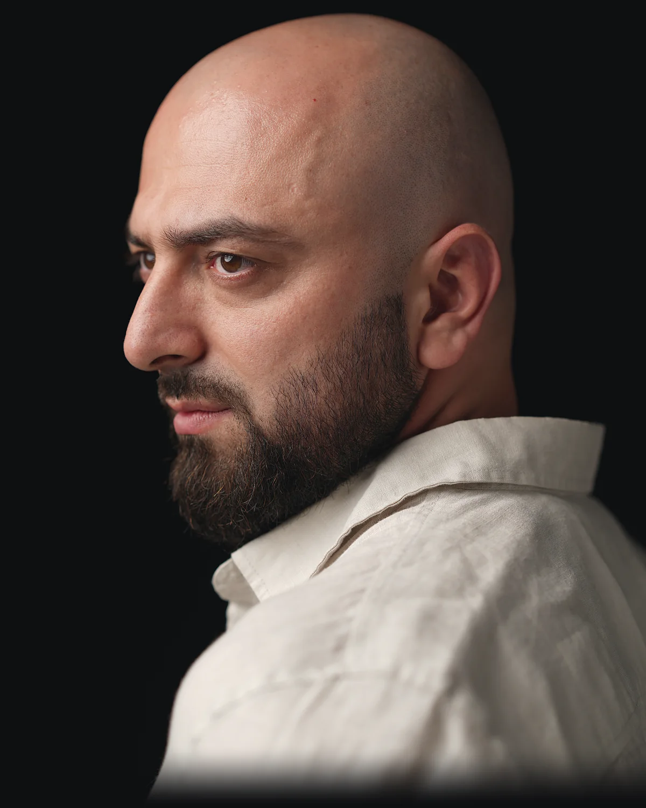
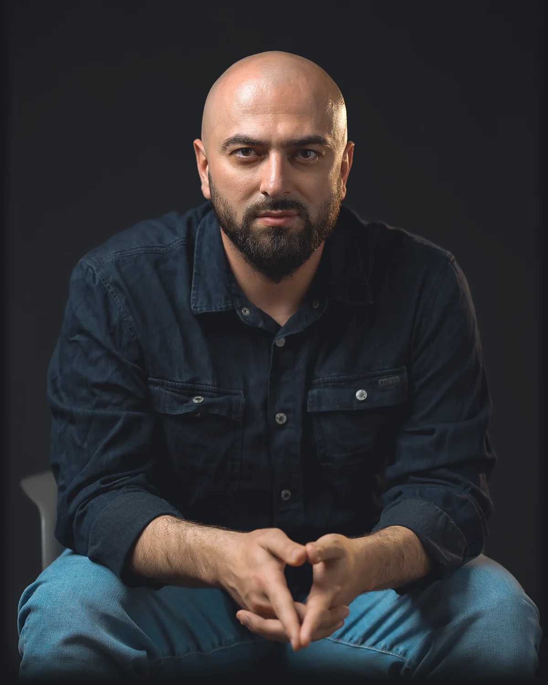

Тренинг мышления для тех, кто решает сам.
Научитесь отличать свои мысли от навязанных.

Громче всех в вашей голове — не вы.
«Сейчас не время». «Клиент выбирает по цене». «Без связей не пробиться». «В моём возрасте поздно». Мы слышим это так часто, что начинаем принимать за собственный вывод.
Проверить всё невозможно — и не нужно. Но некоторые из этих фраз тихо решают за нас: за какую работу браться, сколько просить, когда начинать. Они стоят денег, лет и возможностей.
Этот тренинг — про то, как вовремя заметить, что решаете не вы.
Решения дорогие, советчиков много, а отвечать вам. Хочется понимать, на чём на самом деле стоит ваша уверенность.
Давно хотите поменять работу, поднять цену, начать своё — и каждый раз находится убедительная причина подождать.
Знаете про искажения и ловушки мышления, но замечаете, что знание почти не меняет ваших решений.
Есть решение, которое вы откладываете. Придите с ним — к концу месяца у вас будет ответ, а не очередное «потом».
4 встречи по 4 часа, раз в неделю. Игры, опыты и работа в парах на ваших примерах. Теория — коротко и после того, как вы всё увидели сами.
Сколько в вашей голове — вашего.
Берём фразы, в которых вы уверены, и выясняем, на чём держится эта уверенность.
→ Вопрос «Откуда я это знаю?»: пять шагов, которые за пару минут отделяют опыт от чужих слов.
Где ломается довод.
Как устроено любое убеждение и куда в нём прячется чужое. Учимся доставать спрятанный шаг и чинить довод, а не выбрасывать.
→ Справочник ловушек, на которых держатся навязанные мысли.
Факт или додумали.
Опыт, на котором попадаются почти все — даже те, кто читал про когнитивные искажения. Потом — ваша реальная ситуация.
→ Привычка спрашивать: «Это видно на камере — или это у меня в голове?»
Своим умом.
Берёте решение, которое давно откладываете, и проверяете всем, чему научились.
→ Решение, пробный шаг или честное «не сейчас» — с причиной и датой.
+ Встреча выпускников через две недели, бесплатно: что получилось, что помешало, что дальше.
Следующие потоки будут дороже. Дешевле, чем сейчас, этот тренинг уже не будет.
Восемь человек — это время и внимание ведущего для каждого, а не место в зале.
Ваша обратная связь после каждой встречи меняет тренинг — уже для вашей группы.
Выпускники пилота первыми узнают о следующих форматах и встречах.

Философ-практик, предприниматель, психолог. Президент Федерации Го Республики Дагестан.
Пишу о лидерстве, свободе и победах, которые заслуживают, а не захватывают.
На тренинге я не эксперт, который знает, как вам жить. Я даю инструменты и задаю вопросы. Выводы — ваши.
Канал «Философский камень»Достаточно одного слова: «Шумоподавление».
Расскажете, что хотите получить. Я честно скажу, подойдёт ли вам этот формат или лучше другой.
После разговора. Место закрепляется за вами.
Нет. Работаем на понятных примерах из работы, денег и жизни. Единственное, что стоит принести, — вопрос или решение, которое вас занимает.
Курсы учат думать «правильно» и разбирать чужие ошибки. Здесь вы разбираете свои убеждения — и доводите это до реального решения.
Это главное. Все инструменты вы опробуете на своих рабочих и денежных вопросах, а к концу месяца проверите одно конкретное решение.
Только то, чем вы сами захотите поделиться. Разбираем, как вы рассуждаете, а не вашу биографию. Сказать «пас» можно всегда.
Предупредите заранее — договоримся, как догнать группу.
Пилот проходит только вживую: многое держится на работе в парах и в зале.